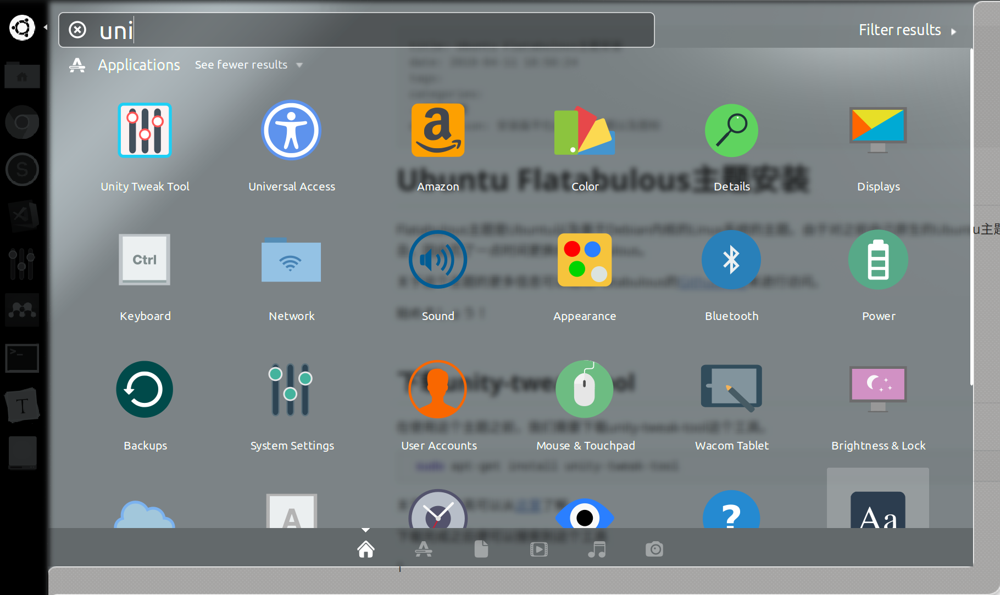
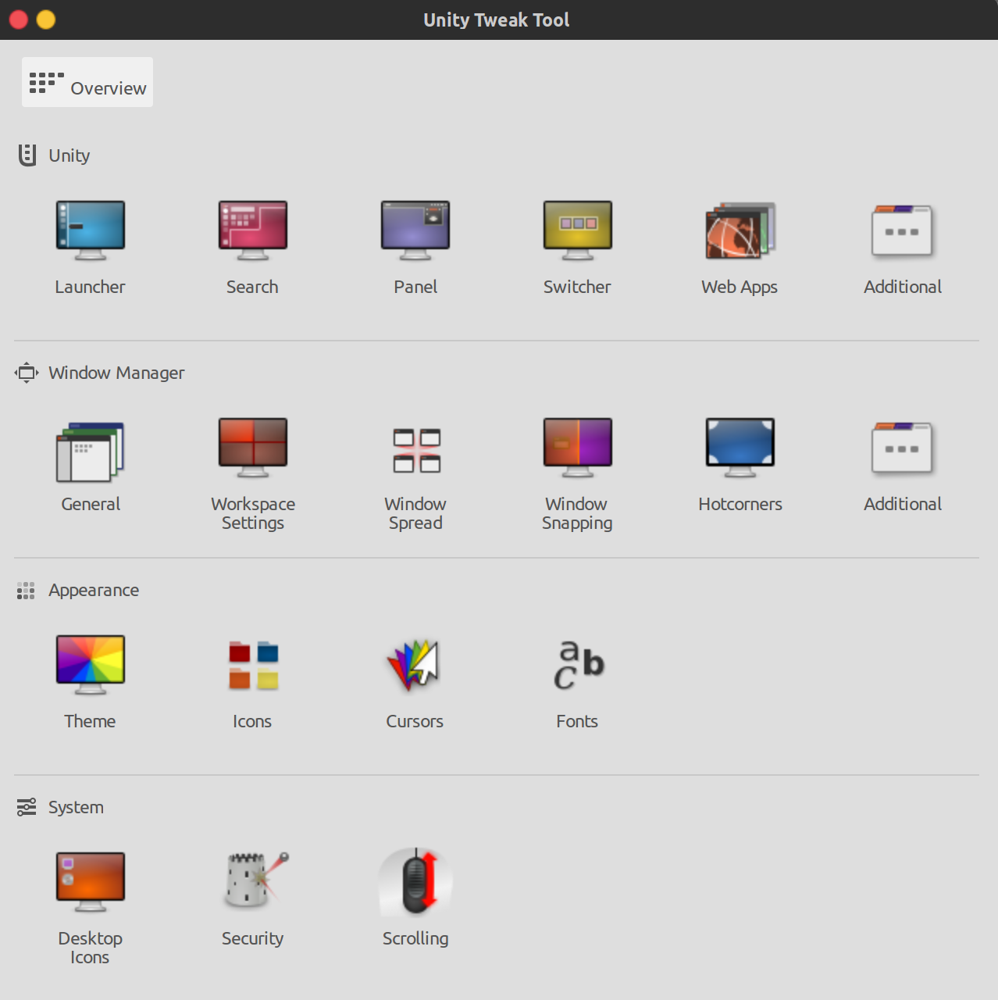
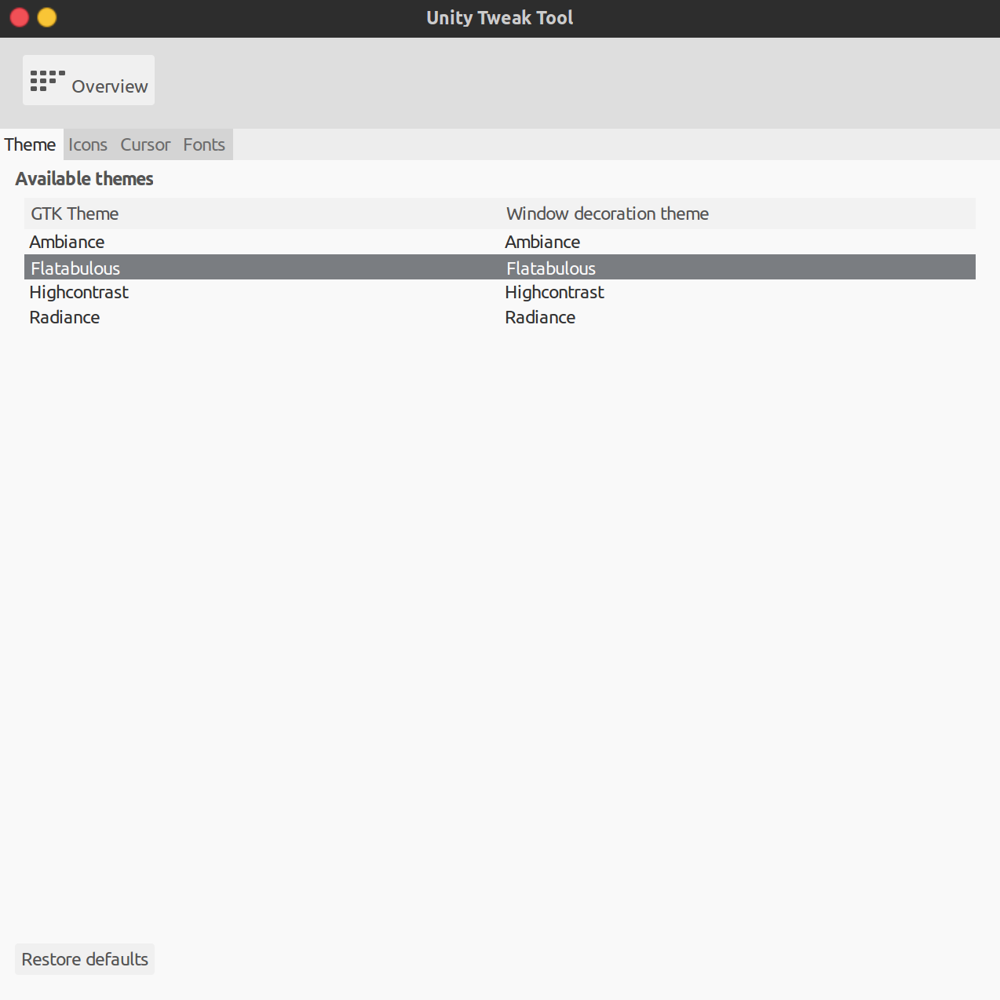
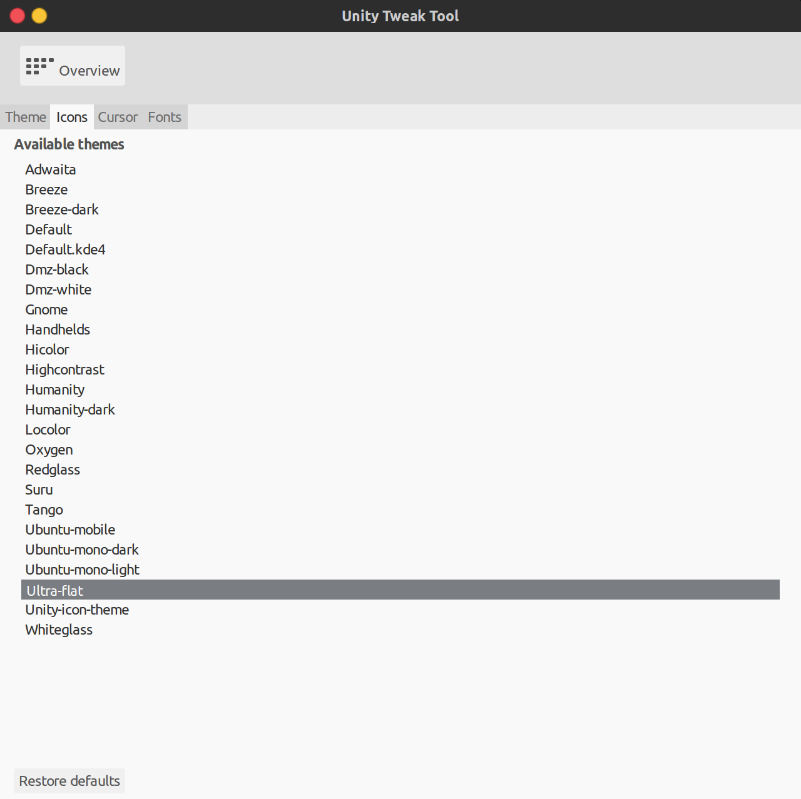

Ubuntu Flatabulous主题安装
Ubuntu Flatabulous主题安装
Flatabulous主题是Ubuntu以及基于Debian内核的Linux系统的主题。由于对之前自己原生的Ubuntu主题表示太丑，因此花了一点时间更换成Flatabulous。
关于这个主题的更多信息可以通过Flatabulous的Github网址来进行访问。
始めましょう！
下载unity-tweak-tool
在使用这个主题之前，我们需要下载unity-tweak-tool这个工具。
1 | sudo apt-get install unity-tweak-tool |
关于这个工具可以从这里了解。
下载完成之后便可以搜索到这个工具

点开之后的界面

使用noobslab PPA进行Flatabulous下载
1 | sudo add-apt-repository ppa:noobslab/themes |
在完成下载之后，点开之前的unity-tweak-tool的界面。在Theme主题下可以找到我们已经下载完毕的主题

使用Flat Icons
对于图标，可以使用推荐的Flat Icons（毕竟原来的图标实在是太丑了）运行以下代码
1 | sudo add-apt-repository ppa:noobslab/icons |
随后可以在unity-tweak-tool界面中的Icons中进行配置

这样，我们的主题就配置完毕了，这比原来的好看多了。
当然也可以使用这个工具对鼠标以及字体进行调整。